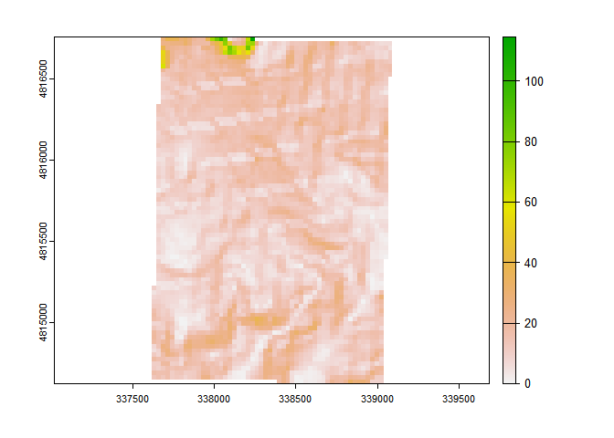

This package offers an R implementation of Universal Soil Loss Equation (USLE). You can find here a collection of functions to estimate main factors: R-factor, K-factor, LS-factor and C-factor. The package usesterra and Rsagacmd in the background. SAGA GIS needs to be install on your machine as well.
Installation
You can install the development version of rusleR from GitHub with:
# install.packages("devtools")
devtools::install_github("atsyplenkov/rusleR")Example
LS-factor
This is a basic example which shows you how to calculate LS_alpine (Schmidt et al., 2019):
library(Rsagacmd)
library(terra)
# initiate a saga object
saga <- saga_gis(raster_backend = "terra")
# load DEM
f <- system.file("extdata/dem.tif", package="rusleR")
DEM <- rast(f)
# calculate LS-alpine
ls <- ls_alpine(dem = DEM)As a result of ls_alpine() you receive a SpatRaster object:
ls
#> class : SpatRaster
#> dimensions : 78, 54, 1 (nrow, ncol, nlyr)
#> resolution : 27.30756, 27.30756 (x, y)
#> extent : 337615.4, 339090, 4814626, 4816756 (xmin, xmax, ymin, ymax)
#> coord. ref. : WGS 84 / UTM zone 38N (EPSG:32638)
#> source : memory
#> name : LSalpine
#> min value : 0
#> max value : 114.6034
R-factor
With the help of get_glored() function you can quickly download and crop to AOI a Global Rainfall Erosivity Database map (GLORED). It was created by Panagos et al. (2017) based on in-situ measurements from 3,625 stations. This GLORED was used to develop a global erosivity map at 30 arc-seconds(~1 km) based on a Gaussian Process Regression(GPR).
library(terra)
f <- system.file("extdata/extent.shp", package="rusleR")
v <- vect(f)
r_factor <- get_glored(v)As a result of get_glored() you receive a SpatRaster object:
r_factor
#> class : SpatRaster
#> dimensions : 2, 2, 1 (nrow, ncol, nlyr)
#> resolution : 809.8197, 809.8197 (x, y)
#> extent : 337544.9, 339164.5, 4814761, 4816381 (xmin, xmax, ymin, ymax)
#> coord. ref. : +proj=utm +zone=38 +datum=WGS84 +units=m +no_defs
#> source : memory
#> name : out
#> min value : 682.1308
#> max value : 820.8951
To-do list
- K-factor functions
- SDR estimation (see Batista et al., 2021)
- Connectivity index (see Borselli et al., 2008)
- IC by Cavalli et al., 2013
- SDR by Vigiak et al., 2012
- C-factor????